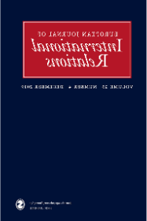

收录于合集

简 介
** 【作者】** Maja Spanu，剑桥大学哈默顿学院国际关系领域的初级研究员，研究领域包括国际关系、自决与国家形成、巴尔干国家、全球等级制度与非殖民化、民族主义和公民身份、人权和少数者的权利、20世纪的国际历史以及战争与战争罪。
** **【 编译 】****杨艺华
** **【 校对 】****金琳
** **【 审核 】****蔡宇
** 【来源】** Spanu, Maja “The Hierarchical Society: The Politics of Self- Determination and the Constitution of New States after 1919.” European Journal of International Relations , Aug. 2019
** 【期刊】** 欧洲国际关系期刊是欧洲政治研究联盟国际关系常设小组（SGIR）的同行评审旗舰期刊，由SGIR和欧洲国际研究协会的联合委员会负责运营。2017年该刊的影响因子为2.545，在国际关系类期刊中排名12/85。

等级社会：自决政治与1919年后新国家的建构
The Hierarchical Society: the Politics of Self-determination and the Constitution of New States after 1919
Maja Spanu
内容提要
大部分学者认为，国际社会存在的等级制度与国际社会扩张的历史（尤其是自决）没有关系。但作者认为，国际社会的扩张实际上是以等级制度安排为前提，即新的国家为进入国际社会而付出了接受国际监督的代价。为此，作者使用了中欧、东欧和南欧的新成立国家在一战后为加入国联而不得不接受“少数者条约”规定的相关材料来证明这一观点。
文章导读 自决是国家内部和国家之间形成等级制度的核心原因。
在20世纪，自决权主要在三段受到监管的国际社会扩张的历史中发挥作用，这三段历史分别是：一战以后、二战后的非殖民化时期以及南斯拉夫解体时期。
在这里，作者对等级制度采取了较为宽泛的定义，认为等级制度是对不同单元和行为体进行分层和区别对待的体系，并认为国际体系中主要有两类不同的政治和制度上的等级制度在发挥作用。
第一类存在于旧有的拥有更大权力的大国和新成立的国家之间，原因在于前者可以为后者制定谁可以自决、如何自决以及是否能成为国际社会的合法成员的标准，而这些问题关系到新国家的权力、地位和身份。第二类等级制度存在于新成立的国家内部，指不同个体与群体获得的权利和地位的分配方式。在本文中，作者主要分析了一战后国际社会的扩张及随之形成的等级制度，并认为一战后的两类等级制度可以从三个维度体现出来。第一个维度是指，在法律和制度方面，新国家不得不接受旧有的、较强大的国家的约束；第二个维度是指，新国家内部不同群体的权利分配不均的情况；第三个维度涉及国内政治对新国家国际地位的影响，这与社会地位有关。
之后，作者从三个维度详细论述了巴黎协议及其后果，论证了其观点。
巴黎和会上的自决
在1919年的巴黎和会上，来自29个国家的代表对战后国际秩序进行讨论，其中一个由历史学家、地理学家和人类学家组成的小组讨论了自决权的问题，即应该给予谁自决权，以及以什么标准为依据？从会议一开始，殖民国就明确表示，在任何情况下都不会放弃他们的海外财产。对他们而言，殖民地还没有准备好被授予选择自己政府的权利。不出所料，在很大程度上，能否享有自治权的界线存在明显的种族歧视的特点。在许多关于民族自决的要求中，各大国只考虑了曾被奥匈帝国、奥斯曼帝国和俄罗斯帝国统治过的欧洲领土的自决要求。在会议的头几个月里，各大国的代表大都认为使新国家的边界与某一民族的边界相吻合是有可能的，所以有关地区的主体民族将获得自决权。但是，人们很快就清楚地认识到，不可能按照确切的民族划分新国家的领土边界。原因是，人们很难确认一个地区的民族分布情况，更难以确认哪一个民族是主体民族。如果他们划定的领土得不到一个地区内的各民族的认可，那么各民族所认定的自己的领土将会发生重叠的情况。同时，少数民族将会发现自己在国内遭受歧视，这会导致战后的国际协议变得不稳定。所以会议认为，必须为新国家内的少数民族提供保障，以克服这种意想不到的歧视。会议决定起草特别条约，这些条约将涉及国家边界、政治团体的建立和为少数群体所制定的特别准则。 **对于 这些新国家来说，进入“国际大家庭”的条件是批准这些条约。**许多代表团特别是那些即将要成立新国家的代表团对这些条约表示不满，但他们最终还是接受了这些条约所规定的国内责任。 然而，这些条约是由国际社会中较为 “成熟”的成员所决定的，这就构成了一种等级制度。
**“少数者条约”的矛盾性
** “少数者条约”虽然主要是关于少数者的条款，但是还包括划分政治团体的条款和关于划分民族的国内条款。另外，这些条约还规定，所有具有相同国籍的人都应得到平等对待，并给予同样的保护和政治与公民权利保障。尽管这些条款的具体执行情况还取决于每个国家的做法，但这已经开创了国际条约影响某国国内的民族划分和民族待遇问题的先河。 在实践中，“少数者条约”产生了问题，那就是民族的识别问题。 尽管可以进行人口普查，但条约并没有承认新国家领土上的所有民族宗教团体。所以，问题就是，哪些民族应该受到识别和保护，哪些却不应该呢？所以， **新国家内 部经常出现权利和待遇方面的歧视和等级制度，有时甚至是以国际标准的名义建立，这在某种程度上延续了殖民者对某国国民进行分类的传统。**有时，对少数民族的国际认可反而会加重这种现象。《圣日尔曼条约》就是和平缔造者未能掌握新国家国内民族复杂性的一个例子。参加巴黎和会的南斯拉夫代表宣布，王国由单一民族即南斯拉夫族组成，但这个民族有塞尔维亚、克罗地亚和斯洛文尼亚三个名字。尽管1910年对奥匈帝国的最后一次人口普查显示该地区至少有9个不同的民族，但条约并没有承认所有的民族宗教团体。 **这种自相矛盾的国际规范与歧视性的国内等级观念（ 即牺牲其他群体的利益来偏袒特定群体）相互结合，对国内产生了严重的后果，形成了等级制度。**南斯拉夫经常以国际准则的名义对国际上被承认和现在却不被承认（以前曾被承认）的少数民族进行歧视。例如，阿尔巴尼亚人（其中许多人是穆斯林，但不被承认是该群体的一部分）被剥夺了公民身份，并经常被剥夺土地和财产。例如，黑山人（威尔逊在他的《十四点宣言》中曾向他们承诺自决）和马其顿人被纳入了更大的“塞尔维亚人”群体，并被剥夺公民和文化权利。
** ** 少数者体系及国联中的等级制度****
1920年，国联决定允许少数群体向新成立的少数民族部门提交反对不公平待遇的请愿书。但是，除非专门解决国际争端的国联理事会受理，否则这些请愿书将只是“仅供参考”的 “政治”文件，而不是“法律”文件。针对每一封请愿书，理事会会设立由三个不同成员组成的“三人委员会”，以决定是驳回索赔要求、寻求非正式调解还是将问题提交理事会。在委员会审查请愿时，涉及的国家有权做出答复。在这个问题到达理事会之前，这一进程就被拖慢甚至常常被阻碍。如果确实有任何请愿书送交理事会，理事会可以决定这一事项是保留还是移交给国际法院的常设法庭。新成立的法院偶尔发表判决和咨询意见。从1922年该法院成立到1939年少数者体系结束，在930份请愿书中，只有16份被提交给最高法院，有758份被三人委员会认为根本无法受理。大多数情况下，被受理的请愿书将通过所谓的非书面程序处理，即非正式的“善意的讨论”。不遵守条约规定的国家被威胁，如果他们不在国内采取措施，这些问题将被公开并由法院进一步处理。新国家对请愿书制度进行了强烈的抗议，认为这是对其国内管辖权的明确干涉。但是，国联理事会其他成员不同意这种看法。在巴黎和会上，各大国已明确表示，除了自决之外，保护少数群体的权利对保障国际和平是必不可少的。许多学者强调，当时不干涉已成为与国家主权相关的一项重要规范，请愿过程的官僚化和局限性正是这一趋势的例证。然而，这一论点掩盖了一个事实，即承认新国家的自决权伴随着对新国家的限制。毕竟，新国家必须达到“少数者条约”的标准才能被视为国际社会的合法成员，而这些标准是由更“成熟”的国家在和平会议上制定的。 在“善意的讨论”和被受理的请愿书中，新国家不断被提醒一个事实，即它们作为平等的主权国家的地位取决于是否满足大国关于适当国家行为的期望。 此外，国联有权派遣特派团前往新的国家核查它们的情况。如果不尊重国际上制定的标准，这些新国家将被提醒，他们的行为是不恰当的、不够文明的，这与19世纪巴尔干国家和拉美国家所受到的待遇如出一辙。
_ ** _ ** _ ** _ 本文由国政学人独家编译推荐**__
扫下方二维码查看往期精彩
【新刊速递】第01期 | Review of International Studies Vol.45, No.4, 2019

▲分类导览 1
▼分类导览2